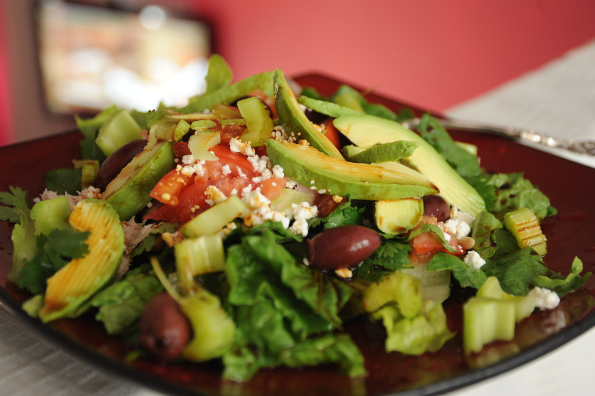

La salud es lo más importante. En eso estamos de acuerdo. Comer sano es algo que muchos de nosotros queremos hacer, aunque a veces nuestra vida y nuestro entorno nos lo ponen difícil. Llevar un alimentación saludable es algo a lo que le pongo mucho empeño, sobre todo ahora que soy mamá y que tengo que dar ejemplo.
Estos días estoy haciendo el Taller de hábitos de Chocobuda para trabajar justo este hábito: tener una alimentación saludable. No voy a negar que hacer cambios en una dieta cuesta un poco, como cualquier cambio de hábito. Pero me doy cuenta que en lugar de hacer cambios drásticos, lo que vale es hacer cambios graduales.
Ahora mismo se puede decir que mi alimentación es bastante saludable, salvo en momentos puntuales y con ciertos matices que quiero mejorar. Pero todo esto es fruto de pequeños cambios que he ido haciendo de forma gradual.
Primero empecé por eliminar la comida basura de mi dieta, e ir comiendo cada vez menos grasas animales, aumentando el consumo de frutas y verduras. Luego he cambiado a cereales integrales y he limitado mi consumo de pan sólo a las mañanas. He eliminado la leche de vaca y la cafeína de mi dieta y trato de no comer hidratos de carbono por la tarde/noche. Empecé también a eliminar mi consumo de carne y pescado hasta que he convertido mi dieta prácticamente en vegetariana. Ahora estoy en proceso de eliminar los azúcares refinados de mi alimentación. El truco está en los pequeños cambios. “Poquet a poquet”, que dicen en mi tierra.
Regla 2: Si quieres eliminar algo malo de tu dieta, reemplázalo por algo más saludable y sabroso.
Cuando trates de eliminar algo malo, ayuda a reemplazarlo con algo sano y sabroso que disfrutes. Por ejemplo sustituí el café de mis mañanas con un zumo de naranja y una infusión de rooibos. O uso guacamole para mis tostadas en lugar de paté o mantequilla. Encuentra opciones saludables que te encanten.
Regla 3: Las primeras cosas a cortar son los fritos, grasas animales, productos que son demasiado azucarados (refrescos de cola, dulces) y otra comida basura.
Además de frutas y verduras, introduce gradualmente a tu dieta alimentos saludables, alimentos ricos en calcio, como algas, almendras y verduras de hoja verde, alimentos con grasas buenas, como aceite de oliva, aguacate…; alimentos de alto valor proteico pero con poca grasa, como el tofu, nueces…, y alimentos ricos en fibra. Evita productos con alto contenido de grasas saturadas o muy azucaradas. No los elimines completamente, sino que empieza una eliminación gradual y sustitúyelos por algo más sano y sabroso (véase primera dos reglas).
Regla 4: Come porciones más pequeñas y con más frecuencia durante el día.
Yo antes desayunaba al levantarme y no volvía a comer hasta el almuerzo, cuando mi hambre era similar a la de un lobo feroz. Así llenaba mi plato hasta los bordes y no me dejaba nada. Luego me sentía pesada y sin energía. Ahora me ha acostumbrado a comer 5 veces al día. Desayuno dos veces, luego el almuerzo, la merienda y la cena. Así me aseguro de no pasar hambre y de comer cantidades razonables de comida.
Regla 5: Lleva siempre comida saludable y haz un plan de comidas para cuando estés fuera de casa.
Me pasaba siempre antes en el trabajo: no me llevaba nada para comer y a media mañana asaltaba la croissantería de al lado. Terminaba comiendo siempre algo dulce, grasiento y poco saludable.
Ahora siempre llevo comida saludable en mi bolso: fruta, nueces, pasas, tortas de maíz o de arroz, bocadillos saludables y alimentos similares, para mí y para mis hijos si van conmigo. Es una opción más saludable y, además, menos cara.
Hay muchos más consejos, pero estas son las reglas básicas para tener una alimentación saludable, que es la base para sentirse bien. Incorpora estas reglas una a una, poco a poco, y verás un gran cambio en tu estado de salud, ánimo y energía.